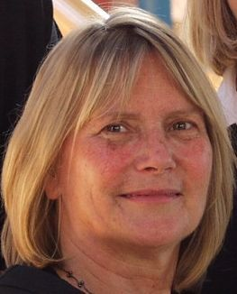
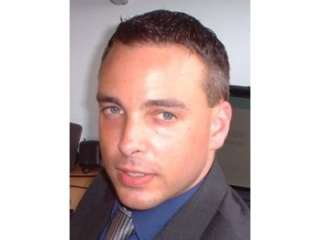

Mike Anstey - Technical Director
Mike started work as a management trainee in a large manufacturing company eventually leaving to attend University. After graduating he spent a period as a lecturer in computing followed by currently running a small company which has completed a range of technology related consultancy assignments for major companies including Racal, Dowty and Hughes Microelectronics. Mike has been awarded a significant number of UK, US, Japanese and European patents relating to this work. He has also been a dti SMART winner (Small Firms Merit Award for Research and Technology) and a winner of ECN (Innovative Engineering), EDN (Readers Hot 100 Products of the Year) and Electronics Weekly most innovative electromechanical product awards. He invented and patented a number of products and has subsequently assigned or licensed his patents to major companies including Racal Microelectronics, Dallas Semiconductor (USA), GPT Reliance, Dowty, Harwin PLC and Lodgenet Entertainment Inc (USA).
Mike has an HNC in Business Studies a BA degree in Computing subjects, a BSc degree in Social Sciences and a Masters Degree in Innovation and Technology Assessment from Cranfield University. He is a Member of the Royal Horticultural Society and a Fellow of the Royal Society of Arts.
Lynette Warren - Company Co-Founder
Lynette trained as a Radiographer and amongst other locations worked for 5 years in Nairobi alongside members of the flying doctor team. On her return she set up two small businesses, with a colleague. She returned to University and specialised in ecotoxicology and pollution monitoring and the use of geographical information systems for environmental data. She was commissioned to research and produce 'The Luton Borough State of the Environment Report' for Luton Borough Council, Published 1992. Lynette was a qualified radiographer (MSR) and had a BA degree (politics philosophy and economics); a Masters degree in Community Enterprise from Cambridge University and was a Fellow of the Royal Society of Arts. She was a Director of Earthworks St. Albans - an environmental community enterprise and a Director of the Bedfordshire Rural Community Charities.
Lynette had a passion for all things green and was the driving force behind the Company's horticultural and environmental projects. Sadly missed - her contribution was invaluable and she will not be forgotten

Simon Hall
Simon has a degree in product design and designs and manufactures educational Renewable Energy Kits to promote awareness and understanding of renewable energy, and to encourage the production of energy from sustainable sources.
His industry background has provided a strong grounding in product design and development, project management, sales, marketing, manufacturing, and supplier liaison.

Simon Anstey
Simon is a Cambridge University graduate in Computer Science. Since leaving Cambrige he has worked as an IT consultant for many industrial leaders across Europe, including UBS Bank Zurich, Nokia Research Cambridge and Alcatel Telecom Paris.
Julia Bohler
Julia studied psychology at the University of Zurich with focus on cognition and perception, as well as architecture at ETH in Zurich. Schooled in Switzerland she learned languages from an early age and now speaks fluent German, English, French, Italian and Spanish.
Simon Smith
Simon is another Simon, and another graduate in Computer Science, a software consultant, crystal ball gazer, breadboarding guru and part time wage slave. He can 'get by' using HTML5, CSS, Javascript,PHP, MySQL and Python and occasionally adds comments to his code !
Currently working with vscode to program ESP32s embedded with micropython
He carries a small hammer for solution of hardware prototyping problems and has odd bits at
Odd Bits Here